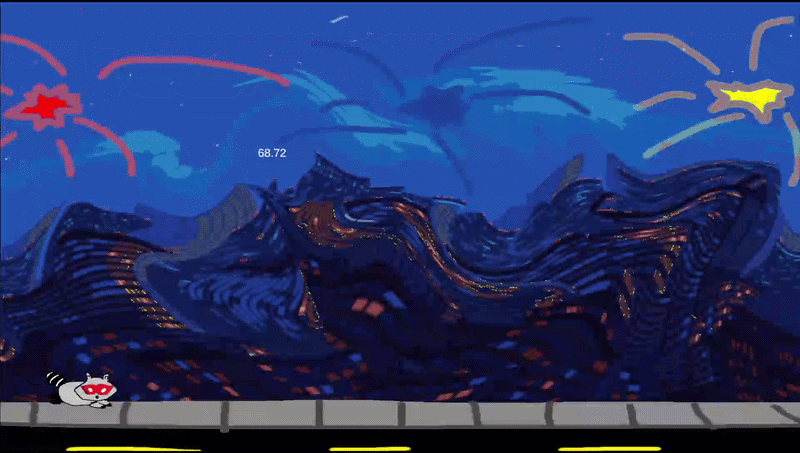
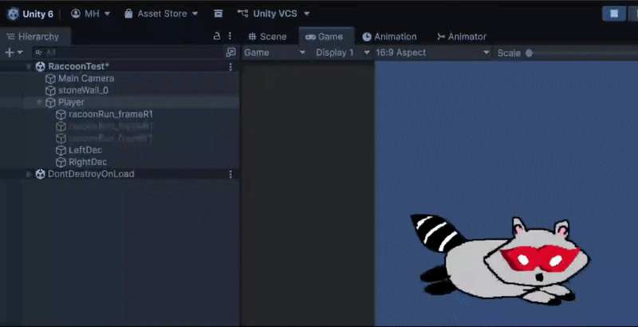

GAME JAM • SPRING 2026
Primary MASKoon Run
Run as far as you can through a city as a raccoon with a special color-changing mask!
Play Primary MASKoon Run ↗Project Overview
In this game, you play as a raccoon with a special mask that allows you to phase through colored barriers that can obstruct your path. The goal is to survive as long as possible, inspired by the Chrome Dino Game.
My Contributions
I worked on the color changing mask mechanic of the raccoon. It's basically enabling and disabling 3 different raccon objects, wearing each of the 3 colored masks; red, yellow, or blue. This was essential as this allows the player to be able to pass through the colored walls, which are the main obstacles for the player. I also took the 2 running frames created by our group's artist to make a running animation that plays during gameplay.
Gameplay and Showcase


Team & Credits
I worked with 2 other people on Primary MASKoon Run as part of the January 2026 UWW GAMED global game jam. The theme was "Mask" and we had 48 hours to make this game. Here's everyone who worked on it below:
- Michael — Programming
- Jacob — Programming
- Jasper — 2D Art / Story